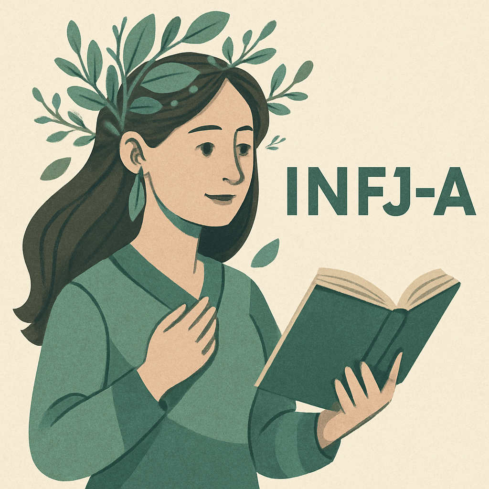

自己分析詳細レポート
複数の診断ツールを活用した客観的な自己分析結果をご紹介します
MBTI性格診断結果

INFJ-A
提唱者
INFJ（提唱者）は異彩を放つ存在で、「理想主義」と「洞察力」というユニークな特性の組み合わせを備えています。豊かな内面は、「複雑な感情」「鮮明な想像力」「深い共感力」という特徴があり、他者と深くつながることができます。

理想主義と洞察力を兼ね備えた提唱者
🎯 完璧主義
仕事や私生活において完璧を目指して努力することが多く、自分と他人に高い基準を設定する傾向があります。
🚀 野心
人生において自分が選んだ分野で目標を達成し、成功し、周囲に有意義な影響を与えたいという願望が強いです。
💪 モチベーション
困難に直面しても行動を起こし、目標を追求し、前進し続けるための内なる衝動を持っています。
RIASEC職業適性診断
職業興味と適性を6つのタイプで分析した結果です。最も高いスコアが適性の高い分野を示しています。
95
芸術的（A）
創造性・表現力
83
慣習的（C）
組織的・規則的
75
現実的（R）
実践的・技術的
65
社会的（S）
人との関わり
56
企業的（E）
リーダーシップ
29
研究的（I）
探究・分析
🎨 特徴の読み取り
- 芸術的（A）95： 芸術・創造性を活かす仕事に強い適性
- 慣習的（C）83： 組織的・規則的な仕事にも関心
- 現実的（R）75： 具体的なモノを扱う業務への適性
- 社会的・企業的： 人との関わりやリーダーシップも活かせる
VIAキャラクター強みプロファイル
24の強みの中から、特に優れている上位10の強みを特定しました。
1位
誠実さ
真実を語り、偽りなく存在する。自分の気持ちと行動に責任を持つ。
2位
ユーモア
笑いやいたずらを好み、人に笑いをもたらす。明るい面を見ようとする。
3位
親切心
他人に対して親切で寛大。見知らぬ人にも喜んで良い行いができる。
4位
公平さ
個人的感情に左右されず、すべての人を公平に扱いチャンスを与える。
5位
チームワーク
グループの一員として忠実で献身的。成功のために尽力する。
6位
創造性
新しいやり方を考える力。従来の方法では満足せず、改善を探求する。
7位
寛容さ
過ちを犯した人をゆるし、やり直すチャンスを与える。復讐心を持たない。
8位
好奇心
あらゆる経験や主題に興味を持ち、探求と発見を好む。
9位
大局観
賢明な助言ができ、納得感のある世界観を持つ。他者に信頼される。
10位
社会的知性
他者の動機や感情を理解し、適切に振る舞うことができる。
キャリア適性と今後の方向性
🎯 適性の高い職業分野
- クリエイティブ・デザイン関連
- EC事業・デジタルマーケティング
- プロダクト企画・開発
- DX推進・業務改善
- チームリーダー・プロジェクトマネージャー
💪 活かせる強み
- 創造性と実用性のバランス
- チームワークとリーダーシップ
- 誠実で信頼される人柄
- 新しい技術への好奇心
- ユーモアによるコミュニケーション力
🚀 今後のビジョン
創造性と技術力を活かしながら、チームと共に価値のあるプロダクトを生み出していきたいと考えています。 EC事業での経験とDXスキルを基盤に、より多くの人に喜ばれるサービスの企画・開発に携わり、 組織の成長と個人の成長を両立させていくことが目標です。